Here’s what happened.

3
2
Not on the list.
Your practice probably hasn’t touched its Google listing in months.
It cares whether your online presence gives it something to work with.
That’s what I work on.
James Palmquist
VetForge AI
vetforgeai.com